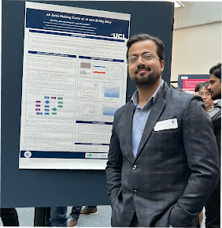
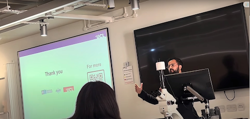
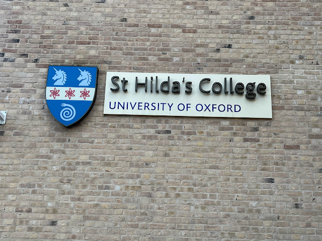
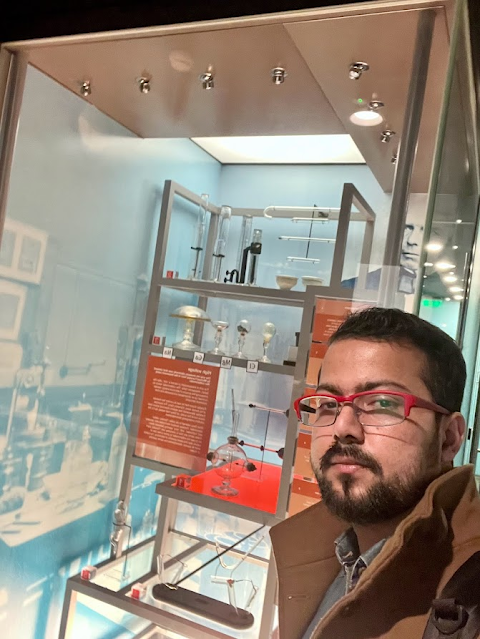
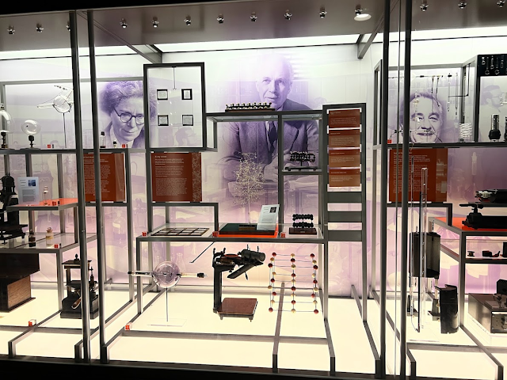
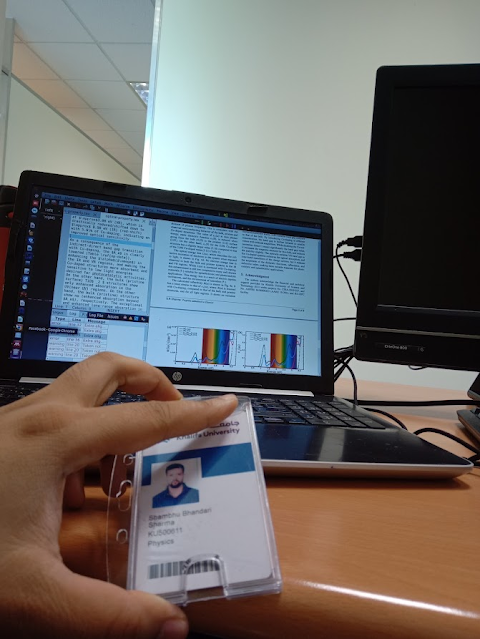
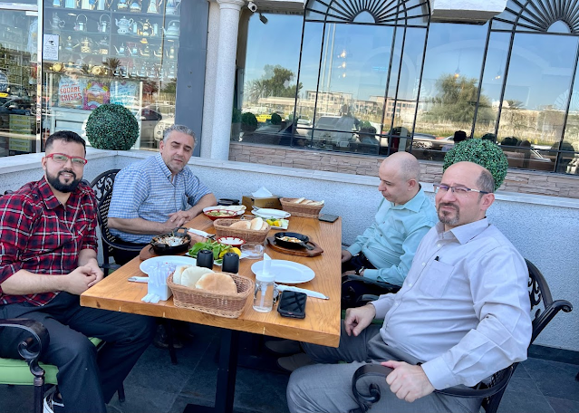
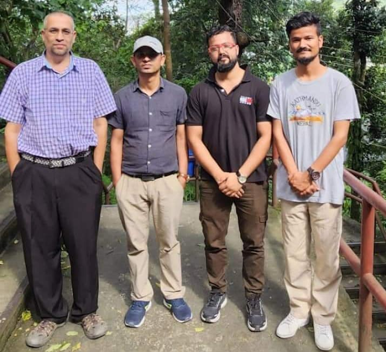
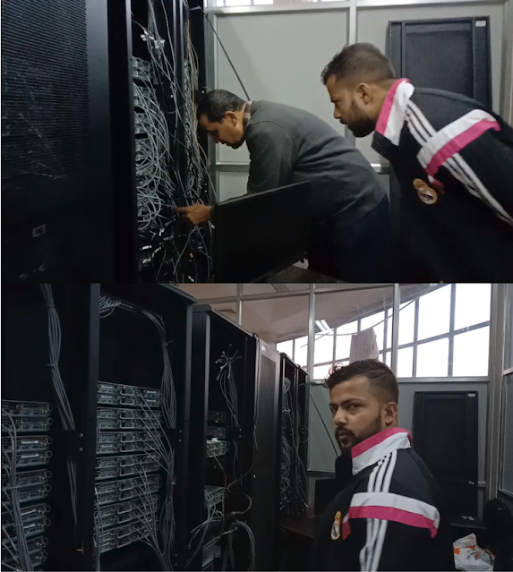

TYC PhD Student Conference
Presented research findings at the Thomas Young Center annual PhD conference, a flagship event for computational condensed matter physicists across London universities.

Thomas Young Center PhD Conference, Imperial College London
UCL Departmental Conference
Presented latest results on ab-initio phase diagram calculations for Al-Mg binary alloys at UCL's annual departmental research conference.

Presenting research at the UCL conference

UCL Departmental Conference, April 2024
AWE Physics Student Conference
Attended the AWE Physics Student Conference — "Inspiring Physicists of the Future" — at Oxford. Engaged with leading researchers and fellow physicists from across the UK.

AWE Conference, Oxford

Keynote talk by Professor

With Diniel (Oxford Univ.)

Conference group photo
The Royal Institution
Visited the historic Royal Institution — home of Faraday's original laboratory and countless scientific discoveries. A pilgrimage for any physicist.

Faraday's Laboratory

Royal Institution visit

X-ray tube & discoveries at RI
Khalifa University of Science and Technology
Joined Khalifa University as Research Associate, working on computational studies of 2D materials and surfaces. A transformative year of collaborations, research meetings, and cultural exchange.

First day with employee ID at KU

Research meeting at KU

Coffee break with colleagues at KU

Final day — Arabic cuisine with professors
TU / Kathmandu University Research
Post-graduate research at Tribhuvan University and Kathmandu University. Worked with Prof. Rajendra Adhikari on theoretical and computational physics problems, and witnessed the installation of KU's first High-Performance Computing system.

Thesis supervisor & friends at KU, Nepal

Prof. Rajendra Adhikari on the new HPC system at KU
Master's Research & SIESTA Workshop
Attended the SIESTA (Spanish Initiative for Electronic Simulations with Thousands of Atoms) DFT workshop in India — the pivotal starting point of a career in first-principles computational physics.

SIESTA workshop, India

Workshop group photo, India